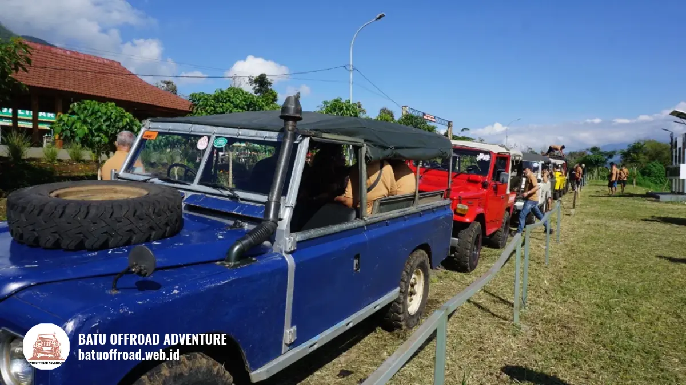

Apa Saja Fasilitas Coban Putri yang Ada untuk Rombongan
Fasilitas Coban Putri untuk rombongan mencakup jarak coban yang dekat, shuttle transportasi, Land Rover offroad, outbound team building, serta kedekatan dengan Jatim Park 2 dan Eco Active Park, ditambah parkir, toilet, musholla, dan kantin. Semua fasilitas ini kami siapkan untuk mendukung kegiatan utama, yaitu offroad Coban Putri Batu dengan Land Rover dan shuttle, sehingga rombongan bisa fokus menikmati kegiatan tanpa repot mengurus kebutuhan dasar.
Tabel Fasilitas Ada atau Tidak Ada
Berikut daftar fasilitas yang kami sediakan di basecamp, sesuai informasi resmi di situs Batu Offroad Adventure tahun 2026.
| Fasilitas | Ada / Tidak | Catatan |
|---|---|---|
| Area parkir | Ada | Luas, untuk bus dan mobil pribadi |
| Toilet | Ada | Bersih dan terpisah |
| Musholla | Ada | Kapasitas sekitar 8 sampai 10 orang |
| Kantin atau cafe | Ada | Makanan berat dan ringan |
| Pendopo permanen | Ada | Tempat berteduh dan briefing |
| Titik listrik | Ada | Di pendopo dan area resepsionis |
| Shuttle transportasi | Ada | Untuk rombongan |
| Peralatan keamanan | Ada | Disertakan dalam paket |
| Peralatan fun games dan outbound | Ada | Disertakan sesuai paket |
Bagaimana Kondisi Toilet dan Kebersihan
Toilet di basecamp kami disediakan dalam kondisi bersih dan terpisah, sehingga nyaman bagi rombongan campuran, keluarga, dan peserta kantor sebelum maupun sesudah kegiatan.
Toilet terpisah memudahkan rombongan campuran untuk bergantian dengan teratur. Setelah kegiatan yang berlumpur atau basah, peserta dapat membersihkan diri dan berganti pakaian.
Karena itu, kami menyarankan setiap peserta membawa pakaian ganti. Jika rombongan Anda besar, beri tahu kami lebih dahulu agar pengaturan antrean dan jadwal ganti pakaian dapat disesuaikan.
Bagaimana Parkir Mobil dan Bus Serta Akses Masuknya
Area parkir luas melayani bus dan mobil pribadi, dan akses jalan menuju basecamp berupa aspal dan makadam diperkeras yang dapat dilalui motor, mobil LCGC, sedan, dan MPV.
Rombongan bus yang masih mempelajari rute ke Coban Putri dari Batu, Malang, bandara, dan stasiun sebaiknya mengabari kami sebelum datang agar titik turun dan parkir bisa diatur.
Peserta turun dekat area resepsionis, lalu kendaraan menuju parkir, sementara pengendara motor dapat langsung memarkir kendaraannya di area yang tersedia.
Apa Saja Rest Area, Kantin, Musholla, dan Area Duduk
Rest area kami meliputi pendopo permanen untuk duduk dan berteduh, kantin dengan makanan berat dan ringan, serta musholla berkapasitas sekitar 8 sampai 10 orang.
Pendopo menjadi pusat berkumpul sebelum dan sesudah kegiatan, sekaligus tempat berteduh ketika hujan. Kantin mempermudah rombongan memesan makan atau camilan tanpa meninggalkan area.
Musholla dipakai bergantian karena kapasitasnya terbatas, sehingga kami menyarankan rombongan besar menjadwalkan waktu ibadah dengan jeda yang cukup.
Titik listrik tersedia di pendopo dan area resepsionis untuk mengisi daya ponsel atau kamera. Panitia kantor biasanya memasukkan musholla, toilet, dan kantin ke dalam checklist panitia gathering kantor outdoor di Batu agar tidak ada kebutuhan peserta yang terlewat.

Kegiatan offroad land rover di kawasan Coban Putri
Apa Fasilitas Kegiatan yang Disediakan
Fasilitas kegiatan meliputi Land Rover offroad, shuttle transportasi, peralatan fun games dan outbound, serta peralatan keamanan yang disertakan dalam paket kami.
Land Rover dan jip 4x4 dikemudikan oleh driver berpengalaman, dan peran pemandu serta keselamatannya sejalan dengan yang dijelaskan pada jenis armada jeep offroad Batu dan pemandunya.
Guide atau instruktur memandu sesi permainan dan outbound team building. Peralatan games disiapkan oleh tim kami, sehingga peserta tidak perlu membawa perlengkapan sendiri, walau perlengkapan pribadi tetap dipersilakan.
Berdasarkan data situs resmi Batu Offroad Adventure tahun 2026, kami telah menyelenggarakan lebih dari 180 event, sehingga kami terbiasa mengatur kegiatan untuk rombongan keluarga, kantor, sekolah, dan komunitas.
Peralatan outbound dan sesi instruktur, misalnya, termasuk dalam paket offroad dan team building, sedangkan permainan kelompok yang lebih santai ada pada paket offroad dan fun games.
Bagaimana Aksesibilitas untuk Anak, Lansia, dan Rombongan Besar
Fasilitas kami dapat dinikmati anak, lansia, dan rombongan besar dengan persiapan yang tepat. Konsultasikan kondisi peserta lebih dulu agar kegiatan disesuaikan.
Parkir luas, toilet terpisah, dan pendopo membantu kenyamanan semua usia. Peserta lansia sebaiknya memilih kegiatan yang tidak terlalu berat sesuai persiapan offroad Batu untuk lansia, sedangkan keluarga dengan anak perlu memahami batas usia anak untuk kegiatan offroad sebelum memesan.
Untuk rombongan besar, paket kami umumnya dimulai dari 10 orang, dan kami mengatur jadwal agar peserta tidak menumpuk di satu titik.
Rute Singkat dan Destinasi Sekitar
Basecamp berada di Temas, Kecamatan Batu, dengan akses aspal dan makadam. Di sekitarnya terdapat Jatim Park 2 dan Eco Active Park yang bisa digabung dalam satu hari.
Rombongan yang datang dari luar kota dapat mengikuti rute ke Coban Putri yang berakhir di basecamp kami.
Setelah kegiatan selesai, banyak peserta melanjutkan ke wisata dekat Coban Putri dari Jatim Park 2 sampai Eco Active, sehingga fasilitas istirahat di basecamp berguna sebagai titik jeda sebelum perjalanan berikutnya.
Kesimpulan
Fasilitas Coban Putri yang tersedia dari kami mencakup parkir luas, toilet bersih dan terpisah, musholla, kantin, pendopo, titik listrik, shuttle transportasi, Land Rover, dan peralatan kegiatan. Semuanya dirancang agar rombongan nyaman dari datang sampai pulang.
Ingin dibantu memilih kegiatan yang pas untuk rombongan Anda? Tim Batu Offroad siap membantu lewat konsultasi singkat di WhatsApp +62 812-3398-9707, dan rombongan yang sudah mantap dapat langsung menimbang paket Batu Offroad sebelum menentukan jadwal.
FAQ
- Apakah ada musholla di basecamp?
Ya. Musholla tersedia dengan kapasitas sekitar 8 sampai 10 orang. Rombongan besar sebaiknya beribadah bergantian dan menjadwalkan jeda ibadah di dalam rundown. - Apakah parkir cukup untuk bus rombongan?
Area parkir kami luas dan melayani bus serta mobil pribadi. Agar lancar, kabari tim lewat WhatsApp sebelum hari kedatangan supaya titik turun dan parkir bisa diatur. - Apakah tersedia makanan di lokasi?
Kantin kami menyediakan makanan berat dan ringan. Rombongan yang ingin pengaturan makan khusus dapat menyampaikannya lebih dahulu lewat WhatsApp. - Apakah ada tempat berteduh ketika hujan?
Ada. Pendopo permanen kami berfungsi sebagai tempat berteduh sementara. Armada kami juga dilengkapi atap dan perlindungan yang memadai.
Artikel Terkait